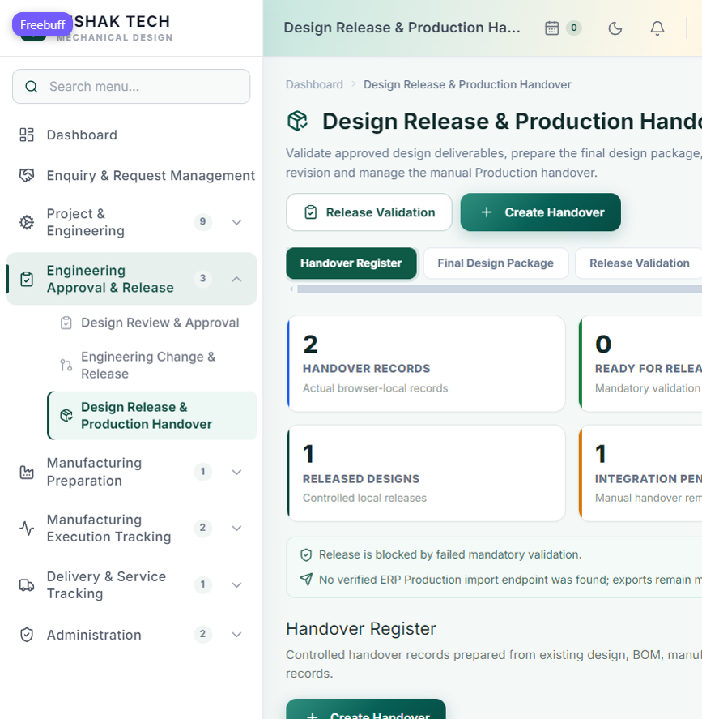
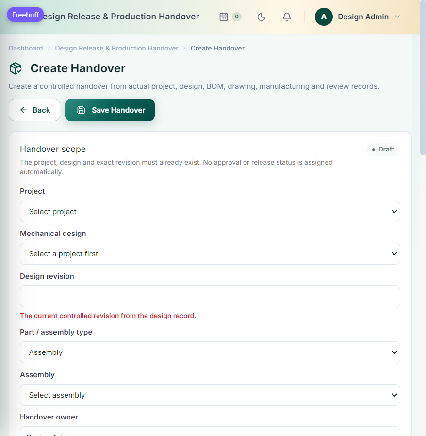
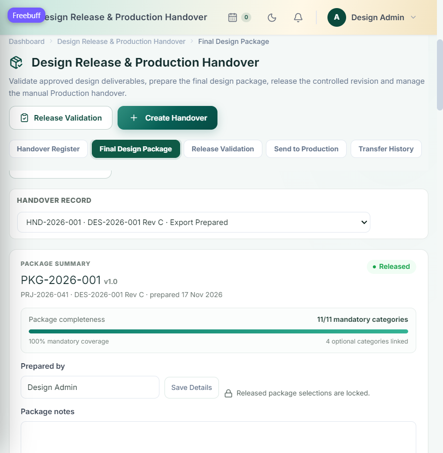
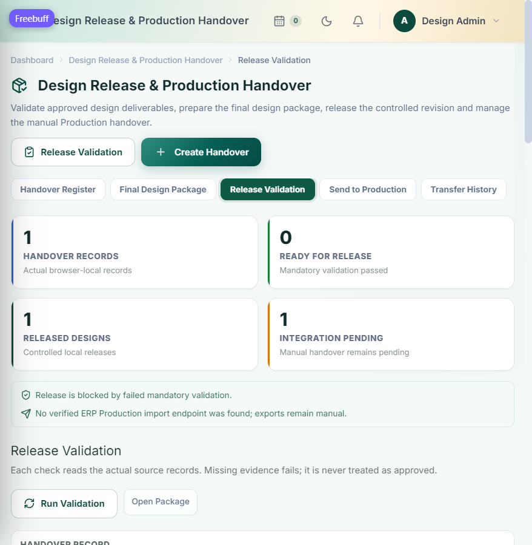
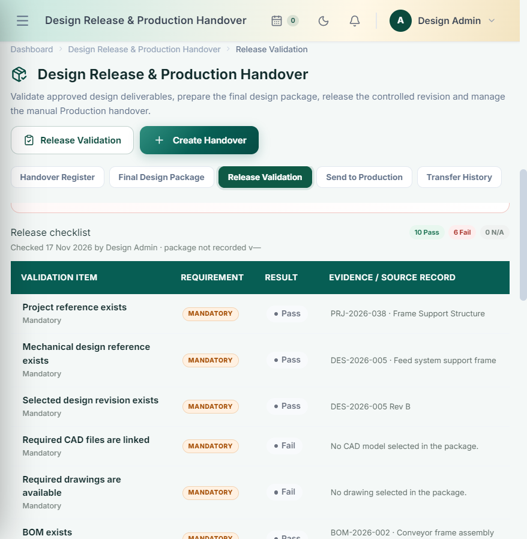
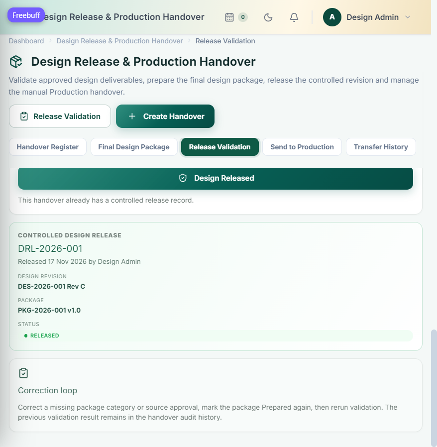
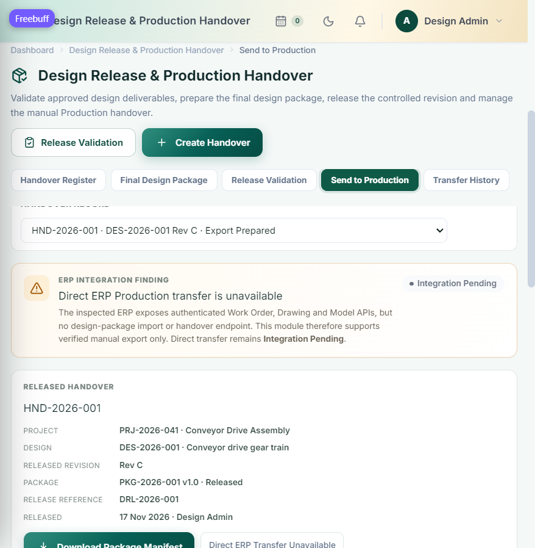
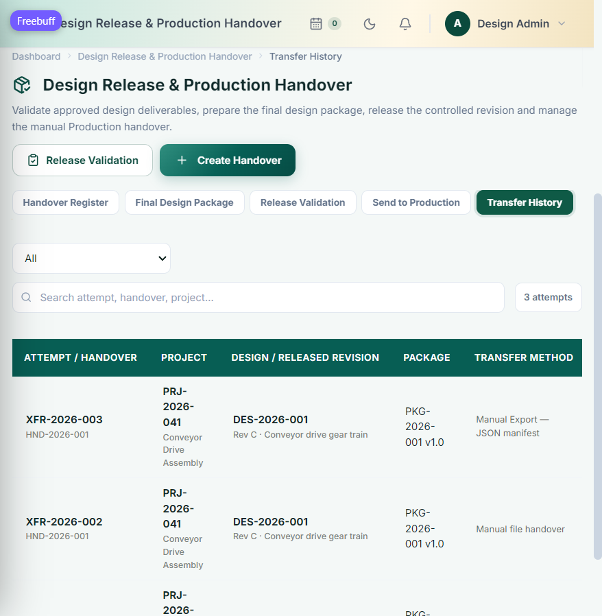
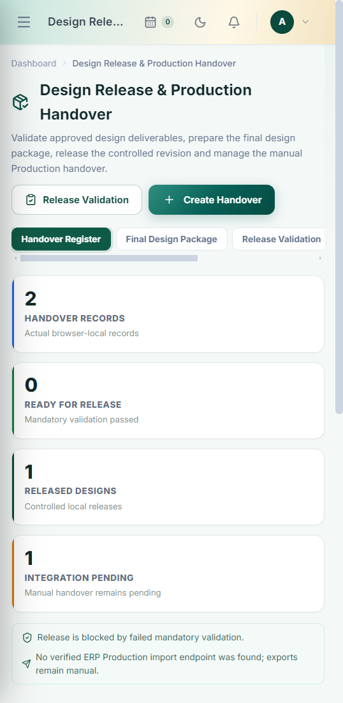

Summary
Module 13 was added as a frontend-only module with one sidebar entry and exactly five tabs: Handover Register, Final Design Package, Release Validation, Send to Production and Transfer History.
It links the handover, package, validation, release and manual transfer audit to existing project, mechanical design, CAD, drawing, BOM, manufacturing, simulation, analysis, review and engineering-change records. No source document, approval, ERP reference or acknowledgement was invented.
Release is blocked whenever a mandatory validation check fails. The inspected ERP Production area has work orders, drawings and models but no design-package import or handover endpoint. Direct transfer is therefore reported as Integration Pending; manual export is recorded as Ready for Export or Integration Pending.
Routes
| Tab | Route | Purpose |
|---|---|---|
| Handover Register | /design-handover | Search, filter and open records |
| Final Design Package | /design-handover/package | Link actual sources and mark Prepared |
| Release Validation | /design-handover/validation | 16 checks and release gate |
| Send to Production | /design-handover/send | Manifest export and manual attempts |
| Transfer History | /design-handover/history | Permanent audit and retry |
Supporting routes: /design-handover/new, /design-handover/:handoverId, /design-handover/:handoverId/edit.
Implementation files
src/data/designHandoverData.js— 15 categories, completeness, 16 validation rules, manifest builder.src/context/DesignHandoverContext.jsx— persistence, CRUD, source linking, validation, release gate, export and retry.src/pages/design-handover/— module shell, register, create/edit, details, package, validation, send and history tabs.src/styles/design-handover.css— scoped responsive styles.src/config/navigation.js— one Module 13 sidebar entry and five tabs.src/App.jsx— provider, imports and routes.
Storage key: md-design-handover-state-v1. Existing storage and the legacy hidden transfer module were left intact.
Package categories
Eleven mandatory categories: Approved Mechanical Design, Released Design Revision, Final CAD Models, Engineering Drawings, BOM and BOM Revision, Manufacturing Definitions, Inspection and Quality Requirements, Process Plans and Work Instructions, Engineering Review Records, Manufacturing Review Records, Approval Evidence.
Optional: Material Specifications, Simulation and Validation Reports, Engineering Analysis Reports, Approved Engineering Change Records. All lists come from the selected project's existing records; CAD excludes superseded files.
Release validation
Sixteen checks cover project, design, exact revision, CAD, drawings, BOM/revision, manufacturing definition, inspection, process plan, engineering and manufacturing review approval, final approval, open engineering changes, revision state and package Prepared state.
Release requires explicit confirmation, a Prepared package, no mandatory failures (recalculated at release), and no prior release. Inspection and process checks are Not Applicable only when no record exists for the project.
ERP Production finding
The Production screens, frontend service calls and backend controllers/routes were inspected read-only. They expose production work orders, drawings and models, but no design-package import, handover receipt or acknowledgement endpoint.
No direct transfer, destination reference, actual transfer date or success message is generated. Direct transfer remains Integration Pending until a real Production acknowledgement exists.
Verified test results
| Test | Result | Evidence |
|---|---|---|
| Build | PASS | npm run build, exit 0 |
| Create handover | PASS | HND-2026-001, HND-2026-002 |
| Duplicate rejection | PASS | Existing record named; count unchanged |
| Edit and delete draft | PASS | HND-2026-003 edited, audited and deleted |
| Link actual sources | PASS | 47 links, 11/11 mandatory categories |
| Validation pass | PASS | 16/16 for HND-2026-001 |
| Validation failure blocks release | PASS | 10/16 for HND-2026-002; release disabled |
| Controlled release | PASS | DRL-2026-001 for DES-2026-001 Rev C |
| Manifest export | PASS | XFR-2026-001, Ready for Export |
| Manual handover | PASS | XFR-2026-002, Integration Pending |
| Retry preserves history | PASS | XFR-2026-003 added; prior rows unchanged |
| Refresh persistence | PASS | 2 handovers, 1 release, 3 attempts after reload |
| Responsive layout | PASS (layout) | 430 px capture; tabs/tables scroll horizontally |
| Direct ERP transfer | NOT TESTED / UNAVAILABLE | No import endpoint |
| Real acknowledgement/destination | NOT TESTED | None received; none invented |
| Downloaded JSON re-opened | NOT TESTED | Download triggered, file not re-opened |
No final test failed. Fixes during verification: released counter now counts actual releases; stale feedback clears on handover selector change; passing inspection/process rows no longer show corrective remarks.
Screenshots









Limitations
- No ERP import/acknowledgement API exists; export is manual by design.
- Module 13 records are browser-local, consistent with the existing app.
- Test records HND-2026-001, HND-2026-002, PKG-2026-001, DRL-2026-001 and XFR-2026-001..003 remain as evidence.
- The downloaded JSON was not re-opened or schema-validated outside the browser.
- The release confirmation modal was exercised but not screenshotted.
- Every tab was not separately screenshotted at 430 px.